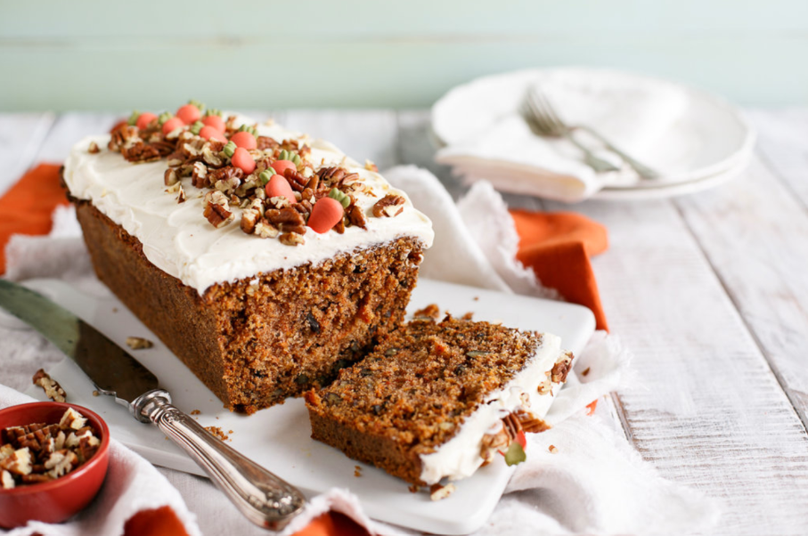

Sally'sbakingaddiction
My Favorite Carrot Cake Recipe
Posted on March 23,2015 / posted in Cakes / 1011 comments

Tiramisu is a timeless no-bake Italian dessert combining espresso-dipped ladyfingers and a creamy lightly sweetened mascarpone cream.This recipe is from the late Maida Heatter and is easily the best homemade tiramisu recipe that I've ever tried.
A couple months ago, I was sent a new cookbook called Happiness is Baking.This cookbook includes Maida Heatter's favorite recipes with the foreword written by Dorie Greenspan.I, unsurprinsingly, immediately fell in love with my newest cookbook.It's a collection of 100 foolproof and classic desserts including cookies, cakes,muffins,pies,tarts,and more that range from simple everyday cookies to outreageously indulgent chocolate souffle cake.
Ingredients
- 1 and 1/4 cups (300ml) very strongly prepared espresso, warm or room temperature
- 6 Tablespoons (90ml) Grand Marnier*
- 40-45 ladyfingers*
- 16 ounces (about 2 cups ; 450g) mascarpone, cold or at room temperature
- 1/4 cup (60ml) dark run
- 4 large pasteurized eggs, separated*
- 1/2 cup (100g) granulated sugar , divided*
- 2 cups (480ml)heavy cream or heavy whipping cream
- 1/2 teaspoon pure vanilla extract
- 1/8 teaspoon salt
- unsweetened natural or dutch-process cocoa powder
For those not familiar , Maida Heatter is an icon, especially in the baking world.Dubbed the Queen of Cake,her axpasive culinary career included 9 cookbooks , recipes for the Times , a restaurant, and three James Beard Awards , Baker and author Dorie Greenspan once said "Whenever someone tells me they want to learn to bake, I tell them to start with Maida Heatter's books.That's ehat I did."This latest cookbook is a testament to Maida's legacy.She passed away only 2 months after this book was published.She leaves behind an icalculable amount of inspiration to bakers and cooks all over the world. "
Common Tiramisu Questions-Answered
What kind of rum do I use i tiramisu?
Dark rum is best , but you can use brandy or your favorite coffe liqueur.
Egg whites or whipped cream?
most tiramisu recipes use whipped egg whites OR whipped cream int he mascarpone cream layers.Egg whites xontribute a more airy texture , while whipped cream makes the filling a bit more rich.This recipe actually uses both, so you're getting both delightful textures.
Are the eggs cooked?
Tiramisu is an no-bake dessert.the egg yolks are gently cooked on the stovetop , but the egg whites are raw.Purchase pasteurized eggs because they are safe to consume raw.
What size pan to use?
This particular tiramisu recipe yields a large volume and the pan will be very full.Make sure your pan is alrge enough.I recommended a 9x13 inch dish with at least 12-14 cup capacity.This 4 quart dish is wonderful too.